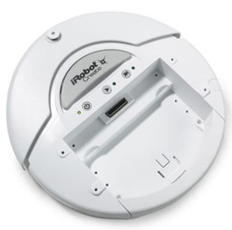
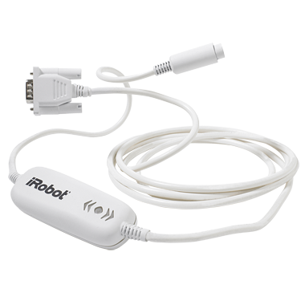
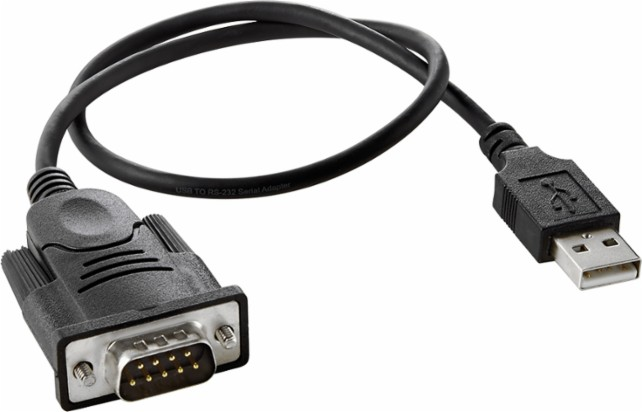
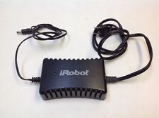
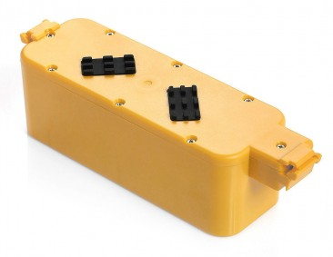
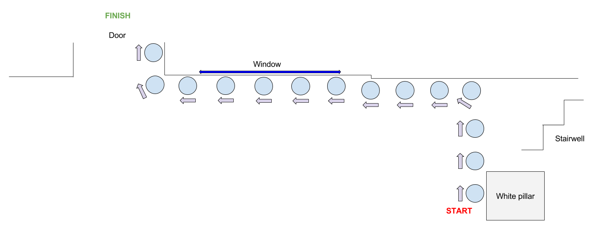

Plan and coordinate the movement of the robot from the white pillar on the left of the west staircase to the east door on the north face of the Harris building.
|  |  |  |
iRobot Create is a robot manufactured by iRobot that was introduced in 2007 and based on their Roomba vacuum cleaning platform. The iRobot Create is explicitly designed for robotics development and improves the experience beyond simply hacking the Roomba. The Create replaces its Roomba predecessor's vacuum cleaner hardware with a cargo bay that also houses a DB-25 port providing serial communication, digital input & output, analog input & output, and an electric power supply. Commands can be issued using the iRobot Roomba Open Interface (ROI) protocol.
We use a serial converter to enable the robot to communicate with our laptop via USB.
|  |  |
The iRobot Create is powered by a 12 cell alkaline battery pack. Or alternatively, we can use a rechargeable battery pack which can be charged using a compatible power adapter.

This code has been written using the Java programming language.
The source code for this project is available here.